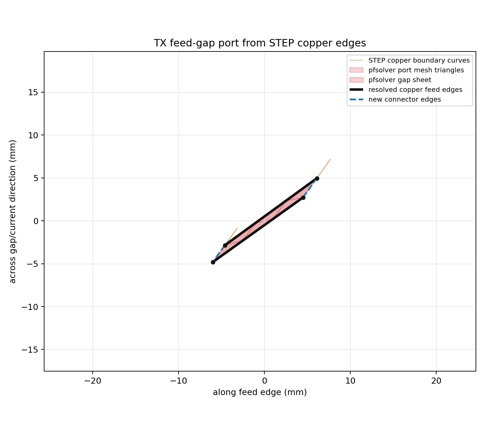
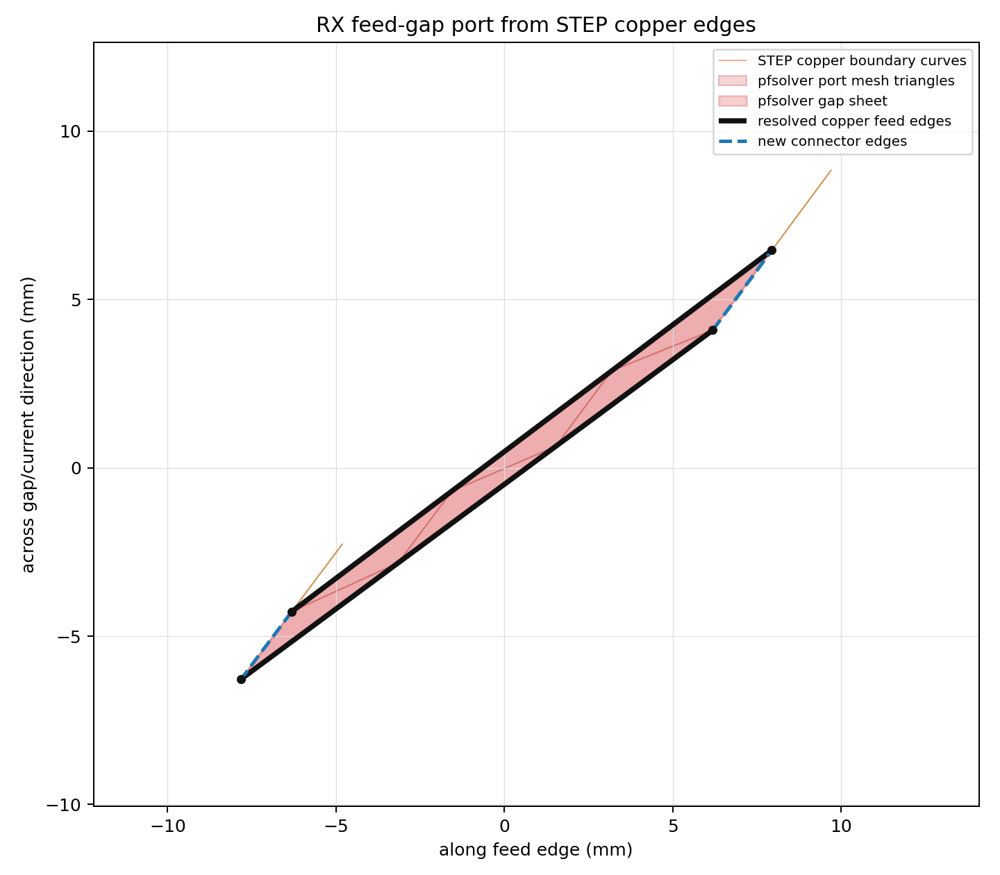

1. 목적과 합격 가설
둘 다 full-wave terminal-network 솔버다. 같은 형상·같은 포트·같은 주파수면 같은 Z가 나와야 한다 — 이를 정량 확인하고, HFSS 라이선스 없이 동일 결과를 재현할 수 있음을 증명한다.
- Z11, Z12, Z22 — 2-포트 임피던스(양쪽 1차 산출)
- L1, L2, M, k — im(Z)/ω 유도
- R1, R2, Q1, Q2 — re(Z), AC 손실
- C1, C2 / SRF — full-wave라 self-resonance 직접 산출
- 손실·field — 3D copper solve-inside loss, ferrite loss, air-gap B-plane, 성공 run의 field plot 이미지 첨부
- HFSS full-wave가 무조건 가장 정확(M3D AC/Electrostatic/Q3D는 실측 탈락).
- pfsolver = Python API orchestration + Palace wrapper + Palace
Driven(변위전류 포함) → E·H·C·L·손실·SRF 전부. - HFSS와 정식화가 같으므로 준정적 솔버보다 tight tolerance를 기대.
- CUDA mandatory · 4-core MPI · CPU 폴백 없음.
peetsfea-palace:0.16.1pfterm01다. stock Palace 0.16.1은 no-ferrite 회귀 진단용으로만 둔다. upstream Palace material 모델은 Permeability(실수 μ)·Permittivity·LossTan(유전체)·Conductivity만 지원하므로 —
페라이트 자기손실 μ″(= magnetic loss tangent)과 주파수 종속 μ(f)를 넣을 항이 없다. HFSS는 이걸 magnetic_loss_tangent + pwlx($mu,Freq)로 모델링한다.
따라서 Palace fork로 복소 μ(자기손실) + 주파수 종속 material을 추가한다. Palace는 우리가 owns하는 내부 full-wave core이므로 이 패치는 정당한 작업이다.2. 형상 (공통 입력) 고정
design_id 0_3_7_p6561d2a5c7808f6e · 외형 한계 360×180 mm · TX–RX edge-to-edge 100 mm · 단일 결정론 STEP을 두 솔버가 동일 import.
| 코일 | 크기 (mm) | turn | twist | gap_ratio | void | PCB gap (mm) |
|---|---|---|---|---|---|---|
| TX (tx_ssw_coil) | 288 × 144 | 4 | 3 | 0.44 | 0.50 | 8.0 |
| RX (rx_ssw_coil) | 324 × 162 | 4 | 3 | 0.60 | 0.25 | 3.0 |
도체: copper(0.07 mm, σ=5.8e7), FR4(0.24 mm 2-PCB, εr≈4.4 tanδ≈0.02), MULL ferrite sheet(0.12 mm, μr=135.6 tanδ=0.00218, TX만 enable). 포트: TX 1_T1, RX 2_T1 lumped terminal.
입력 계약(번들): ssw_scene.step · ssw_step_ledger.json(role/material/body) · ssw_aedt_port_ledger.json(port_edges = tx/rx lumped terminal edge 쌍) · coil_making_token.toml(semantic) · <design_id>.toml(frequency/material). STEP 단독으로는 material/port/boundary가 없으므로 이 번들 전체가 solver 입력이다.
3. HFSS 기준값 — ferrite-enabled(참고) + no-ferrite(1차 기준)
peetsfea-palace:0.16.1pfterm01로 no-ferrite 단일주파수부터 맞춘다.
따라서 pfsolver를 맞댈 정답 기준선은 "HFSS no-ferrite"다 — 같은 fixed 형상에서 TX MULL ferrite만 non-model(solve 제외)로 바꿔 재실행한 값.
아래 ferrite-enabled 표(3.1)는 참고이고, no-ferrite 표(3.2)가 §4·§5의 실제 기준이다.3.1 HFSS ferrite-enabled 실행 완료 · 참고
design_id 0_3_7_p6561d2a5c7808f6e · Terminal-driven, Setup1 @ 6.78MHz 적응 + sweep 0.1–100 MHz(81pt). TX ferrite 포함.
- 적응: MaximumPasses 11 / Min 8 / MinConverged 9, MaxDeltaS 0.005, PercentRefinement 23, BasisOrder 0(mixed)
- 메시 seed: NumMaxElem 50,000 + MaxLength 1mm → 적응 후 최종 156,761 tets
- 포트: TX
1_T1100V@0°, RX2_T1100V@90° · 경계: radiation, region margin 2000mm - 수렴 MaxMagDeltaS = 0.00088(<0.005 ✓) · 솔브 282초 · GPU(RTX 3070) · 4 cores · 11 pass
@ 6.78 MHz (ω = 4.2599×10⁷ rad/s)
| 양 | HFSS ferrite-enabled | 비고 |
|---|---|---|
| Z11 | 0.3699 + j241.85 Ω | |Z11| = 241.85 Ω |
| Z22 | 0.2362 + j212.63 Ω | |
| Z12 | 0.01230 + j6.7063 Ω | 약결합 |
| L1 (Ltx) | 5.6772 µH | im(Z11)/ω |
| L2 (Lrx) | 4.9912 µH | im(Z22)/ω |
| M | 0.1574 µH | im(Z12)/ω, k = 0.0296 |
| R1 | 0.3699 Ω | re(Z11), Qtx ≈ 654 |
| R2 | 0.2362 Ω | re(Z22), Qrx ≈ 900 |
| C1 | 16.35 pF | TX self-resonance 16.52 MHz |
| C2 | 21.62 pF | RX self-resonance 15.32 MHz |
3.2 HFSS no-ferrite 실행 완료 · §4·§5의 실제 기준
같은 fixed 형상에서 ferrite disabled/no-ferrite로 동일 Setup 재실행.
현재 pfsolver ingest 기준으로 쓰는 clean bundle은 run/hfss_no_ferrite_fixed_full/이다.
이 bundle은 <design_id>.toml과 runner copy input.toml을 함께 포함하며, pfsolver는 port ledger design_id와 같은 canonical TOML만 design으로 인정한다.
Setup1 @ 6.78MHz, 마지막 유효 pass 11, MaxMagDeltaS 0.0017877, solve artifact는 RTX 3070/4 cores.
| 양 | HFSS no-ferrite (기준) | ferrite-enabled(참고) | 비고 |
|---|---|---|---|
| Z11 / Z22 / Z12 | 0.2798+j241.68 / 0.2151+j214.66 / 0.00885+j6.489 Ω | 0.3699+j241.85 / 0.2362+j212.63 / 0.01230+j6.706 Ω | |Z11|=241.68 Ω, |Z22|=214.66 Ω |
| L1 / L2 | 5.6732 / 5.0391 µH | 5.6772 / 4.9912 µH | 6.78 MHz final adaptive pass |
| M / k | 0.1523 µH / 0.02849 | 0.1574 µH / 0.02957 | actual pfsolver 기준값 |
| R1 / R2 | 0.2798 / 0.2151 Ω | 0.3699 / 0.2362 Ω | ferrite 손실 제거 → R↓ |
| Q1 / Q2 | 863.9 / 998.0 | 653.9 / 900.1 | R↓로 Q↑ |
| C1 / C2 | exact non-model 미회수 | 16.35 / 21.62 pF | C/SRF는 M5b에서 sweep export 재회수 |
run/hfss_ferrite_enabled_current_full) 대비 clean no-ferrite fixed 기준은
k가 0.02957→0.02849로 내려가고 ferrite solid loss가 제거되며 R1/R2가 감소했다. 이 표의 값이 §4·§5의 pfsolver numeric gate 기준이다.4. pfsolver (Palace full-wave) numeric parity FAIL
오픈소스 CUDA full-wave 경로. solver/pfsolver Python API가 같은 STEP을 gmsh로 메시 → Palace wrapper(~/.local/bin/palace)가 Docker peetsfea-palace:0.16.1pfterm01 엔진 솔브 → terminal current/voltage → Z(f).
1차 비교 대상은 §3.2 HFSS no-ferrite fixed bundle다. 현재 수치 비교는 FAIL.
Problem.Type=Driven). FAIL의 1순위 원인은 port가 코일 루프 전류를 못 만드는 topology 문제다.
코일은 두 끝이 ~2.1 mm 떨어진 열린 스파이럴이고, HFSS lumped terminal은 그 급전 간극(feed gap)을 채우는 sheet에 걸려 전류를 스파이럴 한 바퀴 돌린다(→ j243 Ω). 지금 시도들(copper 표면 패치·내부 단면 cut·overlap)은 두 터미널을 간극 너머로 잇지 못해 국소 단락 → Z11≈mΩ, Z12≈0 붕괴(collapse)거나 26~37× overshoot — 둘 다 같은 뿌리(전류가 루프가 아님). copper 3D solve-inside는 유지(R용). 2순위는 6.78 MHz 전기적-소형 코일의 full-wave 저주파 한계(port 고친 뒤 확인). 자세히는 GOAL.md ★진단.ssw_aedt_port_ledger.json의 edge_vertices_xyz 두 개를 port.copper_body_name의 imported Gmsh/OCC copper boundary curve에 1e-5 mm tolerance로 resolve하고, 새 endpoint point를 만들지 않는다. clean no-ferrite STEP에서 TX는 copper curves 372/205, RX는 692/530으로 resolve된다. port sheet는 이 두 copper curve + connector line 두 개로 구성되고, surface boundary가 이 네 curve를 유지하지 않으면 fail-fast한다.

- 문제 유형:
Driven(주파수영역 full-wave), GOAL1은 6.78 MHz point. sweep 0.1–100 MHz는 M5b. - 포트: terminal gap sheet ×2 (
1_T1/2_T1), HFSS와 같은 edge pair에서 생성. stock Palaceport-I.csv의V/RLC값은 acceptance Z 전류로 쓰지 않는다. - 재질: copper σ=5.8e7 3D conductive solve-inside volume, FR4 εr/tanδ upstream OK; ferrite 복소 μ(135.6 − j0.296, tanδ_m 0.00218)는 Docker
0.16.1pfterm01fork material 패치로 지원. - 메시: gmsh(OpenCASCADE)로 STEP→tet, helper/non-model body 제거, 2000 mm air domain(
76.531342 m³) + 외곽 absorbing only. 70 µm copper trace와 6.78 MHz skin depth(≈25 µm)를 반영하는 conductor mesh 정책 유지. - 실행: peetsfea-facing CLI 없음. Python API가 CUDA
Solver.Device=GPU+ 4-core MPI Palace wrapper를 호출, HYPRE Umpire pool은 free VRAM/MPI rank 기준으로 adaptive 설정.
peetsfea-palace:0.16.1pfterm01이며 ~/.local/bin/palace wrapper가 PFSOLVER_CONTAINER_RUNTIME=docker, PFSOLVER_PALACE_IMAGE=peetsfea-palace:0.16.1pfterm01로 호출한다. Wrapper는 Docker를 host UID/GID로 실행해 postpro 파일이 root-owned로 남지 않는다. run/pfsolver_hfss_fixed_currentsource_rank1/, run/pfsolver_hfss_fixed_air2000_currentsource_rank1/, run/proto_air2000_lumped_native_rank1/, run/pfsolver_hfss_fixed_air2000_retag_pfmuflen2_currentsource_rank1/, run/proto_air2000_retag_pfmuflen_lumped_native_rank1/ 모두 real Palace GPU solve evidence다.pfsolver @ 6.78 MHz (latest diagnostics)
| 경로 | pfsolver/Palace 값 | HFSS 기준 | 판정 |
|---|---|---|---|
current-source, 200 mm airrun/pfsolver_hfss_fixed_currentsource_rank1 | Z11=45.53+j6380 Ω Z22=30.72+j7637 Ω Z12=2.568+j238.53 Ω L1/L2/M=149.77/179.28/5.599 µH | Z11=0.2798+j241.68 Ω Z22=0.2151+j214.66 Ω Z12=0.00885+j6.489 Ω | FAIL 26-37× 과대 |
current-source, HFSS 2000 mm airrun/pfsolver_hfss_fixed_air2000_currentsource_rank1 | raw Z11=483.1−j7705 Ω Z22=15731.9−j56602.7 Ω Z12≈−799.4+j2315.8 Ω | 동일 | FAIL postprocess가 음의 L로 정지 |
native LumpedPort, HFSS 2000 mm airrun/proto_air2000_lumped_native_rank1 | S→Z: Z11≈45.53−j0.265 Ω Z22≈39.58−j0.015 Ω Z12≈−3e-5−j0.0099 Ω | 동일 | FAIL terminal loop current를 구동하지 못함 |
retag current-source, HFSS 2000 mm airrun/pfsolver_hfss_fixed_air2000_retag_pfmuflen2_currentsource_rank1 | Z11=0.002305+j0.000018 Ω Z22=0.004947+j0.000022 Ω Z12≈0 L1/L2/M≈0 | 동일 | FAIL copper outer-surface patch로 collapse |
retag native LumpedPortrun/proto_air2000_retag_pfmuflen_lumped_native_rank1 | S→Z: Z11=0.002305+j0.000018 Ω Z22=0.004947+j0.000022 Ω Z12≈0 | 동일 | FAIL current-source만의 문제가 아님 |
semantic copper-edge feed-gap LumpedPortrun/pfsolver_hfss_fixed_semantic_edge_lumped_rank1 | Palace solve converged, 84.8 s total S→Z: Z11=45.5285−j0.2659 Ω Z22=39.5760−j0.0158 Ω Z12≈−j0.00984 Ω surface-F Z: nonreciprocal, negative L | 동일 | FAIL geometry fixed; Palace terminal current still wrong |
semantic feed-gap SurfaceCurrentrun/proto_semantic_edge_surfacecurrent_rank1 | Palace solve converged, 92.7 s total I_inc=0.051521 A Z11=484.34−j7684.19 Ω Z22=15186.40−j55850.61 Ω Z12≈−772.01+j2276.05 Ω | 동일 | FAIL reciprocal but negative self L |
copper-only internal cut facesrun/proto_internal_copper_cut_currentsource_rank1 | TX 4 faces / RX 3 faces surface-I: Z11=0.002615+j0.000015 Ω field-I: Z11≈0.012+j0.534 Ω Z12≈0 | 동일 | FAIL 수렴하지만 loop current 없음 |
overlapped gap sheet prototypesrun/proto_overlap_gap_* | 1 mm overlap: GMRES NaN 0.02 mm overlap: gmsh segfault | 동일 | FAIL line-contact 해소만으로 불가 |
| 솔브 시간/메모리 | retag rank1 141.6 s wall Palace total 125.4 s peak HWM 3.6 GB | HFSS 6.78 MHz adaptive pass evidence | 실행 OK |
추출식 (Palace 출력 → Z)
native LumpedPort diagnostic: port-S.csv → Z = Z₀ (I+S)(I−S)⁻¹, Z₀=50Ω
L = im(Z)/ω, R = re(Z), M = im(Z12)/ω, k = M/√(L1·L2), Q = ωL/R
C·SRF: sweep에서 im(Z)=0 인 f₀ → C = 1 / ((2πf₀)²·L)
LumpedPort의 port-I.csv는 terminal conductor current가 아니라 V/RLC branch current다. V @ inv(port-I)는 50Ω termination만 재구성하므로 acceptance Z로 쓰지 않는다. surface-I.csv의 0.051521 A는 Palace 소스 기준 dimensionalized physical current가 맞지만, 그 source 자체가 HFSS terminal과 아직 등가가 아니다.LumpedPort와 patched SurfaceCurrent 모두 HFSS terminal current를 만들지 못한다. 따라서 남은 원인은 geometry가 아니라 Palace terminal source/current formulation이다.5. 교차검증 매트릭스 & 합격 기준
HFSS=참값, pfsolver=rank4 acceptance 산출. 현재는 rank1 diagnostics 단계에서 terminal formulation이 실패했으므로 scalar tolerance는 아직 미통과다. 1차 기준은 §3.2 no-ferrite fixed bundle다.
| 양 | HFSS(참값) | pfsolver | tolerance | 오차 | 상태 |
|---|---|---|---|---|---|
| L1 | 5.6732 µH | 149.77 µH(current-source 200mm) negative/current-source 2000mm 4.3e-7 µH(retag) | ±5% | not comparable | FAIL |
| L2 | 5.0391 µH | 179.28 µH / negative / 5.2e-7 µH(retag) | ±5% | not comparable | FAIL |
| M | 0.1523 µH | 5.599 µH / 54.36 µH raw / ≈0(retag) | ±5% | not comparable | FAIL |
| k | 0.02849 | 0.03417 / 0.1109 raw / ≈0(retag) | ±10% | formulation artifact | FAIL |
| R1 | 0.2798 Ω | 45.53 Ω / 483.1 Ω / 0.002305 Ω(retag) | ±15% | not comparable | FAIL |
| R2 | 0.2151 Ω | 30.72 Ω / 15731.9 Ω / 0.004947 Ω(retag) | ±15% | not comparable | FAIL |
| Q1/Q2 | 863.9 / 998.0 | terminal formulation 미확정 | ±15% | — | FAIL |
| |Z11|/|Z22| | 241.68 / 214.66 Ω | 6380 / 7637 Ω(current-source) 45.5 / 39.6 Ω(native old) 0.0023 / 0.0049 Ω(retag) | ±5% | wrong terminal path | FAIL |
| C1/C2 (SRF) | exact non-model 미회수 | scope out | ±10% | — | M5b |
| 상반성 Z=Zᵀ | ✓ | ✓ | 필수 | pass | 통과 |
| passivity re(Z)⪰0 | ✓ | ✓ | 필수 | pass | 통과 |
6. solver 구현 계획 (pfsolver)
구조 = pyaedt→ansysedt. pfsolver는 solver/pfsolver 아래의 독립 Python API 서브모듈(pyright strict + pydantic)다. peetsfea-facing CLI는 만들지 않고, peetsfea가 나중에 Python API를 import/call한다. 컨테이너 안엔 Palace 엔진만 들어가며, Python API가 Palace wrapper를 CLI(JSON/CSV) 경계로 호출한다.
Driven config → Palace wrapper solve → port S/V/I → Z(f)
| 단계 | 입력 → 출력 | 도구 |
|---|---|---|
| 1 Ingest | STEP + ledger + port_ledger + token + TOML → role/material/port 정체성 | Python + pydantic |
| 2 Tag | copper/FR4/ferrite/vacuum domain + lumped port endpoint + 경계 | ledger 매핑 |
| 3 Mesh | STEP → tet .msh, body/port/boundary physical group | gmsh (Python API) |
| 4 Assemble | full-wave curl-curl + 재질 + LumpedPort → Palace .json config | Python config emit |
| 5 Solve | CUDA + 4-core MPI full-wave, 6.78 MHz | Python API → Palace wrapper → stock/forked Palace Driven 엔진 CLI |
| 6 Post | terminal current + port voltage → Z(f), 부호·Z₀ 정규화, L/M/R/C/k, 손실 | Python postprocess |
| 7 Emit | solver-neutral em_result.json + network/derived/loss CSV + manifest | 공통 스키마 |
| 8 Visual | Palace field output → field plot PNG/SVG → HTML 첨부 | postprocess |
마일스톤
peetsfea-palace:0.16.1pfterm01 — 로컬 기본 CUDA 엔진. ~/.local/bin/palace가 Docker runtime으로 호출한다. stock palace:0.16.1은 no-ferrite 회귀 진단용.pfsolver.inspect_bundle(): 번들 ingest + setup 복원
pfsolver.mesh_bundle(): gmsh tet + physical group 태깅
pfsolver.solve_bundle(): no-ferrite 단일 주파수부터
7. 진행 상태 · 다음 단계
| 항목 | 상태 | 솔브/작업 시간 | 산출 |
|---|---|---|---|
| HFSS 기준선(6.78MHz) | ferrite + exact no-ferrite 완료 | ferrite 377.4 s no-ferrite 194 s body-absent sweep 592.7 s | run/hfss_ferrite_enabled_current_full/*run/hfss_no_ferrite_nonmodel_full/* · Z/L/M/R/Q/k (§3) |
| 독립 Python API 서브모듈 + GPU 게이트 | 구현 | — | solver/pfsolver API, CLI 없음 |
| Docker Palace 0.16.1pfterm01 로컬 이미지(M1) | 완료 | 1회 빌드 완료 | ~/.local/bin/palace wrapper → peetsfea-palace:0.16.1pfterm01 |
| ingest+mesh, no-ferrite(M2–M3) | 구현 | mesh 20-40 s | solver/pfsolver gmsh mesh policy + semantic copper-edge feed-gap port sheetrun/pfsolver_port_visual_debug/semantic_*_port_step_*.png |
| solve+post, no-ferrite(M4–M5) | numeric FAIL | semantic LumpedPort 84.8 s semantic SurfaceCurrent 92.7 s | run/pfsolver_hfss_fixed_semantic_edge_lumped_rank1/*run/proto_semantic_edge_surfacecurrent_rank1/* |
| Palace 패치: 복소 μ + projected-length terminal patch + SurfaceCurrent Current | 빌드 완료 | Docker rebuild 완료 image sha256:6a2cebf… | peetsfea-palace:0.16.1pfterm01fork_version=0.16.1pfterm01 |
| sweep·C·손실·field, ferrite 포함(M5b) | 예정 | — | SRF·C·loss·B-plane + HTML field plot image |
| 교차검증 판정 + 리포트 | numeric FAIL | — | 3D copper mesh + terminal-current 모델링 보정 필요 |